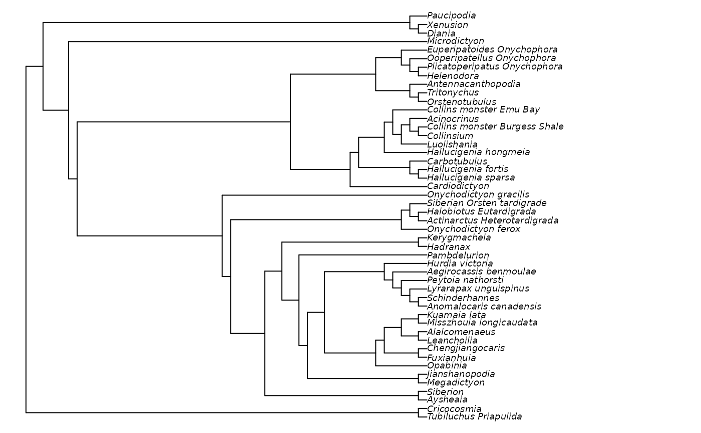

Ratchet() uses the parsimony ratchet (Nixon 1999)
to search for a more parsimonious tree using custom optimality criteria.
Usage
MorphyBootstrap(
edgeList,
morphyObj,
EdgeSwapper = NNISwap,
maxIter,
maxHits,
verbosity = 1L,
stopAtPeak = FALSE,
stopAtPlateau = 0L,
...
)
Ratchet(
tree,
dataset,
InitializeData = PhyDat2Morphy,
CleanUpData = UnloadMorphy,
TreeScorer = MorphyLength,
Bootstrapper = MorphyBootstrap,
swappers = list(TBRSwap, SPRSwap, NNISwap),
BootstrapSwapper = if (is.list(swappers)) swappers[[length(swappers)]] else swappers,
returnAll = FALSE,
stopAtScore = NULL,
stopAtPeak = FALSE,
stopAtPlateau = 0L,
ratchIter = 100,
ratchHits = 10,
searchIter = 4000,
searchHits = 42,
bootstrapIter = searchIter,
bootstrapHits = searchHits,
verbosity = 1L,
suboptimal = sqrt(.Machine[["double.eps"]]),
...
)
MultiRatchet(
tree,
dataset,
ratchHits = 10,
searchIter = 500,
searchHits = 20,
verbosity = 0L,
swappers = list(RootedNNISwap),
nSearch = 10,
stopAtScore = NULL,
...
)
RatchetConsensus(
tree,
dataset,
ratchHits = 10,
searchIter = 500,
searchHits = 20,
verbosity = 0L,
swappers = list(RootedNNISwap),
nSearch = 10,
stopAtScore = NULL,
...
)Arguments
- edgeList
a list containing the following:
vector of integers corresponding to the parent of each edge in turn
vector of integers corresponding to the child of each edge in turn
(optionally) score of the tree
(optionally, if score provided) number of times this score has been hit
- morphyObj
Object of class
morphy, perhaps created withPhyDat2Morphy().- EdgeSwapper
a function that rearranges a parent and child vector, and returns a list with modified vectors; for example
SPRSwap().- maxIter
Numeric specifying maximum number of iterations to perform in tree search.
- maxHits
Numeric specifying maximum number of hits to accomplish in tree search.
- verbosity
Numeric specifying level of detail to display in console: larger numbers provide more verbose feedback to the user.
- stopAtPeak
Logical specifying whether to terminate search once a subsequent iteration recovers a sub-optimal score. Will be overridden if a passed function has an attribute
stopAtPeakset byattr(FunctionName, "stopAtPeak") <- TRUE.- stopAtPlateau
Integer. If > 0, tree search will terminate if the score has not improved after
stopAtPlateauiterations. Will be overridden if a passed function has an attributestopAtPlateauset byattr(FunctionName, "stopAtPlateau") <- TRUE.- ...
further parameters to send to
TreeScorer()- tree
A fully-resolved starting tree in
phyloformat, with the desired outgroup. Edge lengths are not supported and will be removed.- dataset
a dataset in the format required by
TreeScorer().- InitializeData
Function that sets up data object to prepare for tree search. The function will be passed the
datasetparameter. Its return value will be passed toTreeScorer()andCleanUpData().- CleanUpData
Function to destroy data object on function exit. The function will be passed the value returned by
InitializeData().- TreeScorer
function to score a given tree. The function will be passed three parameters, corresponding to the
parentandchildentries of a tree's edge list, and a dataset.- Bootstrapper
Function to perform bootstrapped rearrangements of tree. First arguments will be an
edgeListand a dataset, initialized usingInitializeData(). Should return a rearrangededgeList.- swappers
A list of functions to use to conduct edge rearrangement during tree search. Provide functions like
NNISwapto shuffle root position, orRootedTBRSwapif the position of the root should be retained. You may wish to use extreme swappers (such as TBR) early in the list, and a more subtle rearranger (such as NNI) later in the list to make incremental tinkerings once an almost-optimal tree has been found.- BootstrapSwapper
Function such as
RootedNNISwapto use to rearrange trees withinBootstrapper().- returnAll
Set to
TRUEto report all MPTs encountered during the search, perhaps to analyse consensus.- stopAtScore
stop search as soon as this score is hit or beaten.
- ratchIter
Stop when this many ratchet iterations have been performed.
- ratchHits
Stop when this many ratchet iterations have found the same best score.
- searchIter
Integer specifying maximum rearrangements to perform on each bootstrap or ratchet iteration. To override this value for a single swapper function, set e.g.
attr(SwapperFunction, "searchIter") <- 99- searchHits
Integer specifying maximum times to hit best score before terminating a tree search within a ratchet iteration. To override this value for a single swapper function, set e.g.
attr(SwapperFunction, "searchHits") <- 99- bootstrapIter
Integer specifying maximum rearrangements to perform on each bootstrap iteration (default:
searchIter).- bootstrapHits
Integer specifying maximum times to hit best score on each bootstrap iteration (default:
searchHits).- suboptimal
retain trees that are suboptimal by this score. Defaults to a small value that will counter rounding errors.
- nSearch
Number of Ratchet searches to conduct (for
RatchetConsensus())
Value
MorphyBootstrap() returns a tree that is optimal under a random
sampling of the original characters.
Ratchet() returns a tree modified by parsimony ratchet iterations.
MultiRatchet() returns a list of optimal trees
produced by nSearch Ratchet() searches, from which a consensus tree can
be generated using ape::consensus() or TreeTools::ConsensusWithout().
Details
For usage pointers, see the vignette.
References
Nixon KC (1999). “The Parsimony Ratchet, a new method for rapid parsimony analysis.” Cladistics, 15(4), 407–414. ISSN 0748-3007, doi:10.1111/j.1096-0031.1999.tb00277.x .
See also
Adapted from
pratchet()in the phangorn package.
Other custom search functions:
EdgeListSearch(),
Jackknife(),
SuccessiveApproximations()
Examples
data("Lobo", package = "TreeTools")
njtree <- TreeTools::NJTree(Lobo.phy)
# Increase value of ratchIter and searchHits to do a proper search
quickResult <- Ratchet(njtree, Lobo.phy, ratchIter = 2, searchHits = 3)
#> * Beginning Parsimony Ratchet, with initial score 231
#> Completed parsimony ratchet after 2 iterations with score 212
# Plot result (legibly)
oldPar <- par(mar = rep(0, 4), cex = 0.75)
plot(quickResult)

par(oldPar)